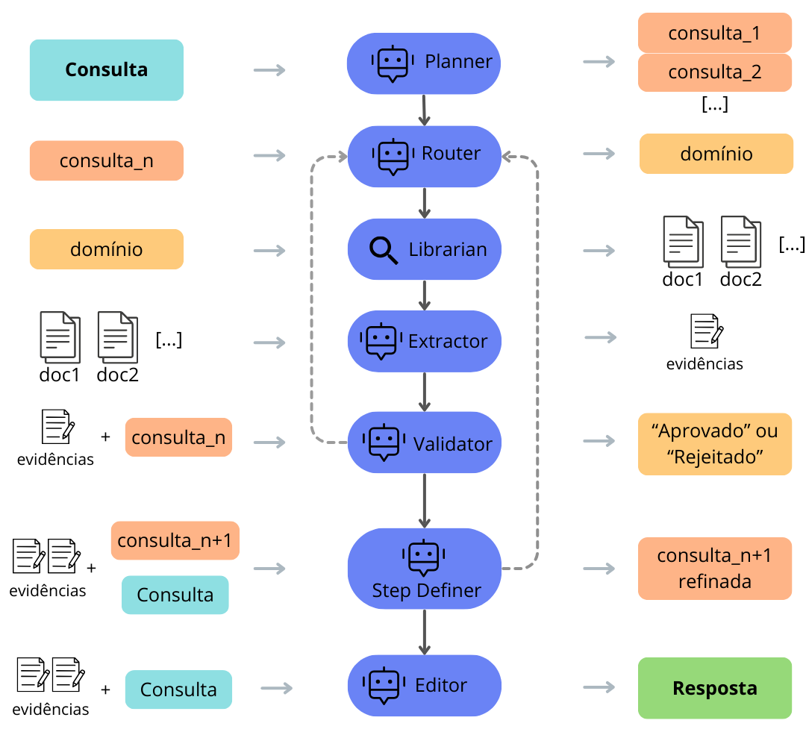

InfoDev - RAG Multiagente para Engenharia de Software
O InfoDev é um sistema de busca e recuperação de informações projetado para ambientes de desenvolvimento de software. Utilizando uma arquitetura de RAG multiagente, o sistema é capaz de navegar por fontes de informações heterogêneas para fornecer respostas precisas sobre o projeto de software.
Alguma vez você já olhou para o código e estranhou uma lógica que nunca viu antes? O InfoDev te ajuda! Ele relaciona aquela lógica com alguma task que a descreveu (ou até mesmo algum e-mail ou mensagem se for algo mais informal!) e retorna todas as informações pra você, promovendo rastreamento e relacionamento de informações!
Stack Tecnológica#
-
Orquestração: Construído com LangGraph e LangChain, permitindo a coordenação de múltiplos agentes especializados;
-
Modelos de Linguagem: Integração com LLMs de última geração e modelos de Embeddings validados pelo benchmark MTEB;
-
Vector Database: Armazenamento e busca por similaridade em documentos técnicos, commits e discussões de código;
-
Processamento de Dados: Pipelines para ingestão e extração de conhecimento do dataset SmartSHARK;
Diferenciais#
-
Arquitetura Multiagente: Separação de tarefas entre agentes de busca, análise de texto e código, e síntese de respostas, aumentando a confiabilidade dos dados recuperados;
-
RAG Avançado: Implementação de técnicas de recuperação que vão além da busca semântica simples, focando no contexto histórico de repositórios;
Arquitetura do Sistema#
O fluxo de trabalho utiliza grafos de estado para gerenciar o raciocínio dos agentes, permitindo loops de feedback onde um agente revisor pode solicitar uma nova busca caso a informação inicial seja insuficiente.
